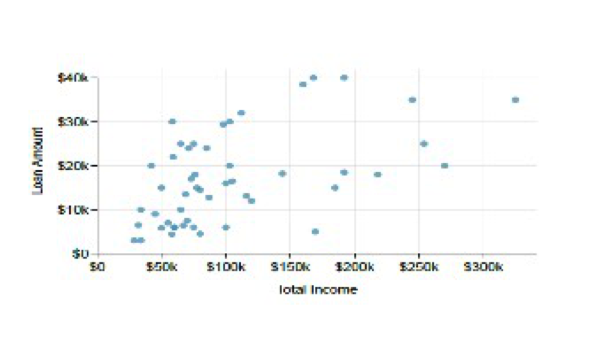
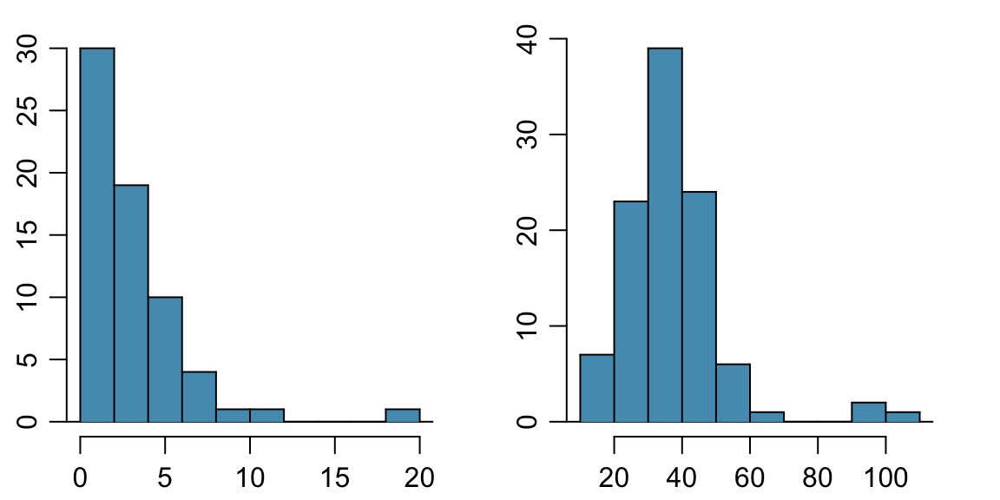
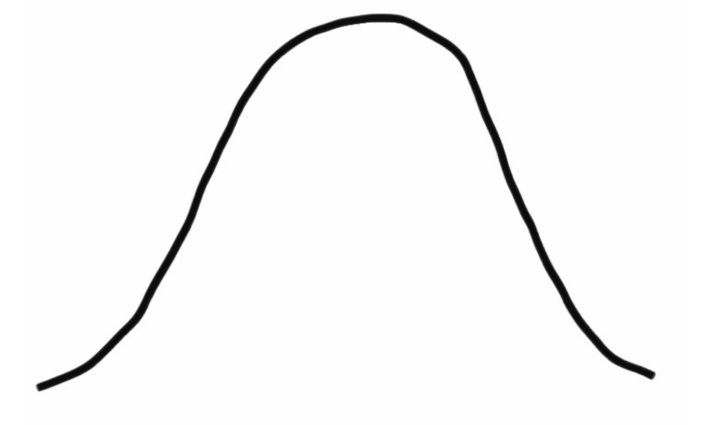

These notes use content from OpenIntro Statistics Slides by
Mine Cetinkaya-Rundel.
These notes use content from OpenIntro Statistics Slides by
Mine Cetinkaya-Rundel.
This chapter focuses on summarizing data
Numerical data
Categorical data
There are three sections in this chapter
2.1 Examining numerical data
2.2 Considering categorical data
2.3 Case study
In this section, we explore techniques for summarizing numerical variables.
Graphical Summary
Numerical Summary
A scatterplot (also called scatter graph, scatter chart, scattergram, or scatter diagram) is a type of plot using Cartesian coordinates to display values for typically two numerical variables for a set of data.
Scatterplots are useful for visualizing the relationship between two numerical variables.
Example 1. The figure below is a scatterplot for a data set (50 cases) of the total income and borrowed loan amount.

Practice: Read two pair of data and interpret.
Back to Example 1. Is the association linear or nonlinear? Nonlinear
Visualize the types of associations.
Dot Plot : shows a dot for each observation placed above its value on a number line.
Dot Plot is useful for visualizing one numerical variable.
Darker colors represent areas where there are more observations.
Higher bars represent areas where there are more observations, makes it a little easier to judge the center and the shape of the distribution.
The mean, also called the average (marked with a triangle in the above plot), is one way to measure the center of a distribution of data.
The mean GPA is 3.59.
\[\bar{x} = \frac{x_1+x_2+ \dots + x_n}{n},\]
where \(x_1+x_2+ \dots + x_n\) represent the n observed values.
Example 1. Calculate the mean of a sample with five observations: 5, 3, 8, 5, 6.
\[\bar{x} = \frac{\sum_{i=1}^{n}x_i}{n} = \frac{5+3+8+5+6}{5}=\frac{27}{5}=5.4\] Using R, we can calculate the mean using the mean() command. Notice that we need to put the values in a vector using the c() function which stands for concatenate.
mean(c(5,3,8,5,6))
Example 2. Given a data set with \(n=234\) and \(\sum_{i=1}^{n}x_i=2019\), find the mean \(\bar{x}\) rounded to 4 decimals.
\[\bar{x} = \frac{\sum_{i=1}^{n}x_i}{n} = \frac{2019}{234} = 8.6282\]
2019 / 234
If the data set has 5 observations, with \(\bar{x} = 5.4\), find \(\sum_{i=1}^{5}x_i\).
Continue discussion in 1, if add one more observation 10, will the mean \(\bar{x}\) increase or decrease? What is the new \(\bar{x}\)?
Compare data sets 5, 3, 8, 5, 6 and 5, 3, 80, 5, 6, which one has the higher mean?
(Example: Extracurricular hours)
Histogram provide a view of the data density. Higher bars represent where the data are relatively more common.
Histograms are especially convenient for describing the shape of the data distribution.
The chosen bin width can alter the story the histogram is telling.

Is the histogram right skewed, left skewed, or symmetric?
__________________________
Histograms are said to be skewed to the side of the long tail.
Are there any unusual observations or potential outliers?

Does the histogram have a single prominent peak (unimodal), several prominent peaks (bimodal/multimodal), or no apparent peaks (uniform)?
In order to determine modality, step back and imagine a smooth curve over the histogram. (Continue to see next slide).


Right Skew 
Left Skew
Right Skew 
Left Skew 
Symmetric 
How would you describe the shape of the distribution of hours of week students spend on extracurricular activities?

Unimodal and right skewed, with a potentially unusual observation at 60 hours/week.
Variance is roughly the average squared deviation from the mean.
\[ s^2 = \frac{\sum_{i=1}^{n}(x_i-\bar{x})^2}{n-1}\\ x : 1,2,5,20 \\ \bar{x} =7\\ (x-\bar{x}): -6,-5,-2,13 \\ (x-\bar{x})^2 : 36,25,4,169 \\ s^2 = \frac{234}{3}= 78 \] We use the squared deviation in the calculation of variance:
To get rid of negatives so that observations equally distant from the mean are weighted equally.
To weigh larger deviations more heavily.
Variance is roughly the average squared deviation from the mean.
Example: For the sample data set “Hours of sleep per night”, the sample size is \(n = 217\), sample mean is \(\bar{x} = 6.71,\) and the variance is calculated as follows:
\(s^2 = \frac{(5-6.71)^2+(9-6.71)^2+\dots+(7-6.71)^2}{217-1} = 4.11 \text{ } hours^2\)
The standard deviation is the square root of the variance, and has the same units as the data.
\[s = \sqrt{s^2}\] \[ s = \sqrt{\frac{\sum_{i=1}^n(x_i - \bar{x})^2}{n-1}}\] Standard deviation measures the variability of data:
if \(\color{blue}{s}\) is small, the data is concentrated around the mean \(\color{blue}{\bar{x}}\);
if \(\color{blue}{s}\) is large, the data is spread further from the mean \(\color{blue}{\bar{x}}\).
The standard deviation of amount of sleep students get per night can be calculated as: \[s = \sqrt{4.11} = 2.03 \text{ } hours\]
We can see that all of the data are within 3 standard deviations of the mean (center), i.e. between 0.62 and 12.8.
\(\bar{x}\) = 6.71, 3s =6.09
\(\bar{x}\) - 3s = 6.71- 6.09 = 0.62
\(\bar{x}\) + 3s = 6.71 + 6.09 = 12.8

Example: The following are samples of women’s and men’s ideal number of children. Find the standard deviation for each group.
Men: 0, 0, 0, 2, 4, 4, 4       Women: 0, 2, 2, 2, 2, 2, 4
Both men and women have a mean of \(\bar{x} = \frac{14}{7}=2\)
The deviations \((x_i - \bar{x})\) for men are: −2, −2, −2, 0, 2, 2, 2
The standard deviation (SD) for men is
\[s = \sqrt{\frac{\sum_{i=1}^n(x_i - \bar{x})^2}{n-1}} = \sqrt{\frac{3(-2)^2+0+3(2)^2}{7-1}}=\sqrt{\frac{24}{6}}=2\] - The deviations \((x_i - \bar{x})\) for women are: −2, 0, 0 , 0 , 0, 2
\[s = \sqrt{\frac{\sum_{i=1}^n(x_i - \bar{x})^2}{n-1}} = \sqrt{\frac{(-2)^2+4(0)^2+(2)^2}{7-1}}=\sqrt{\frac{8}{6}}\approx1.15\approx1.2\]
Example: The following are samples of women’s and men’s ideal number of children. Find the standard deviation for each group.
Men: 0, 0, 0, 2, 4, 4, 4       Women: 0, 2, 2, 2, 2, 2, 4
sd() command as follows:sd(c(0, 0, 0, 2, 4, 4, 4)) sd(c(0, 2, 2, 2, 2, 2, 4))
\[ s = \sqrt{\frac{\sum_{i=1}^n(x_i - \bar{x})^2}{n-1}}\]
The standard derivation ùë† represents a type of average distance of observations from the mean.
The standard deviation is zero (ùë† = 0) only when all observations have the same value, otherwise ùë† > 0.
The larger the value of standard deviation ùë†, the greater the variability of the data. As the spread of the data increases,ùë† gets larger.
s has the same units of measurement as the original observations, while variance ùë†^2 does not.
The standard deviationùë†is not resistant. That is, strong skewness or a few outliers can greatly increaseùë†.
\[0, 1, \textbf{2}, 3, 4\]
\[0, 1, \underline{2, 3}, 4, 5 \rightarrow \frac{2+3}{2} = \textbf{2.5}\]
Example. the data below gives the per capita CO2 emissions in 9 largest nations measured in metric tons per person. Find the value of the median.
China 5.9; India 1.4; U.S. 16.9; Indonesia 1.8; Brazil 2.1; Pakistan 0.8; Nigeria 0.3; Bangladesh 0.4; Russia 11.6.
Solution.
First, put the 9 observations in ascending order 0.3, 0.4, 0.8, 1.4, 1.8, 2.1, 5.9, 11.6, 16.9
Since ùëõ = 9 is odd, the median is the middle observation:
median= 1.8 metric tons.
median() command to the raw (unordered) values:median(c(5.9, 1.4, 16.9, 1.8, 2.1, 0.8, 0.3, 0.4, 11.6))
The new mean is 3.04.
The \(25^{th}\) percentile is also called the first quartile, Q1.
The \(50^{th}\) percentile is also called the median.
The \(75^{th}\) percentile is also called the third quartile, Q3.
Between Q1 and Q3 is the middle 50% of the data. The range these data span is called the interquartile range, or the IQR.
The Quartiles Split the Distribution into Four Parts
Steps:
Arrange the data in order.
Find the median. This is the second quartile, Q2.
Consider the lower half of the observations (excluding the median itself if n is odd). The median of these observations is the first quartile, Q1.
Consider the upper half of the observations (excluding the median itself if n is odd). Their median is the third quartile, Q3.
Example: Cereal Sodium Data
For the sodium values for the 20 breakfast cereals in table,

The median of the 20 values is the average of the 10th and 11th observations, 180 and 180, which is Q2 = 180 mg.
The first quartile Q1 is the median of the 10 smallest observations (in the top row), which is the average of 130 and 140, Q1 = 135 mg.
The third quartile Q3 is the median of the 10 largest observations (in the bottom row), which is the average of 200 and 210, Q3 = 205 mg.
Five-Number Summary:
minimum; first quartile; median; third quartile; maximum
In this example, the five number summary is: 0 135 180 205 340
Example: Cereal Sodium Data
In R, we can compute the five-number summary using the summary() command as shown below.
Note that the quantile.type = 2 works for both odd and even sample sizes with the exception of n=5 observations in which case we need to adjust quantile.type = 6.
summary(c(0,50,70,100,130,140,140,150,160,180,
180,180,190,200,200,210,210,220,290,340),
quantile.type = 2) #change type to 6 if n=5
The interquartile range is the distance between the third quartile and first quartile: \[IQR = Q3-Q1\] IQR gives the spread of middle 50% of the data distribution.
The IQR measures the variability.
An observation is a potential outlier if it falls a distance of more than 1.5 x IQR below the first quartile or a distance of more than 1.5 x IQR above the third quartile.
That is, if either
\(x < Q_1 - 1.5*IQR\)
Or
\(x> Q_3+1.5*IQR\),
then the value \(x\) is a potential outlier
’
Boxplot uses quartiles to draw a box and two whiskers to summarize data. (Boxplot can be horizonal or vertical.)
The box represents the middle 50% of the data, from Q1 to Q3. The thick line in the box is the median.
A line goes from the lower end of the box to the smallest observation that is not a potential outlier (lower whisker).
A line goes from the upper end of the box to the largest observation that is not a potential outlier (upper whisker).
Indicate potential (suspected) outliers if there are any.
Below is a boxplot of interest rate from from loan dataset. From the plot,
Guessed answer: Q1=8, Q2=10, Q3=14, IQR=6
Max Whisker reach 14+1.5*6=23, Min=5 , Max= 26.
Potential outliers 25,26
Skewed to the right.
When there is no outliers (or in a simple way), the boxplot is determined by five number summary.
Example. Given a data set with the following boxplot.
Calculate the IQR
Explain why there is no outlier.
What percentage of the data is below 4.
What percentage of the data is above 10.
Can you tell the five summary from the boxplot.

Multiple boxplots may put by side-by-side to compare the data sets.
Example. The following are two box plots for heights (in inches) of boys and girls. Use the boxplots to answer the following questions:
The five number summary for each group (boys, girls):
If a girl is 68 inches tall, what is the percentage of girls who are below or at her height? what is the percentage of boys who are below or at her height?
How much percentage of boys are not shorter than all girls?
Match the histograms to Boxplot.
Why is it important to look for outliers?
Identify extreme skew in the distribution.
Identify data collection and entry errors.
Provide insight into interesting features of the data.
How would sample statistics such as mean, median, SD, and IQR of household income be affected if the largest value was replaced with $10 million? What if the smallest value was replaced with $10 million?
Median and IQR are more robust to skewness and outliers than mean and SD. Therefore,
for skewed distributions it is often more helpful to use median and IQR to describe the center and spread.
for symmetric distributions it is often more helpful to use the mean and SD to describe the center and spread.
If you would like to estimate the typical household income for a student, would you be more interested in the mean or median income?
Median -b/c household income is skewed to the right.
If the distribution is symmetric, center is often defined as the mean: mean \(\approx\) median.
If the distribution is skewed or has extreme outliers, center is often defined as the median.
Which is most likely true for the distribution of percentage of time actually spent taking notes in class versus on Facebook, Twitter etc.?
Which is most likely true for the distribution of percentage of time actually spent taking notes in class versus on Facebook, Twitter etc.?
Which is most likely true for the distribution of percentage of time actually spent taking notes in class versus on Facebook, Twitter etc.?

Mean and median are both measures of center of numerical (quantitative) data.
When data are extremely skewed, transforming them might make modeling easier. A common transformation is the log transformation.
The histograms on the left shows the distribution of number of basketball games attended by students. The histogram on the right shows the distribution of log of number of games attended.(Here is the natural log)
What other variables would you expect to be extremely skewed?
Salary, housing prices, etc.
In this section, we introduce tables and other tools for categorical data.
Example. A study of aphasia measured a sample of 22 adult aphasics with identified three types of aphasia (loss of ability to understand or express speech). The resulting data is given below:

We can use the R function table() to construct the frequency table to summarize the data.
c() function. We will name that vector aphasia_type
table() function to get the frequencies of the different aphasia types aphasia_type = c("Broca's", "Anomic", "Anomic", "Conduction", "Broca's", "Conduction", "Conduction", "Anomic",
"Conduction", "Anomic", "Conduction", "Broca's", "Anomic", "Broca's", "Anomic", "Anomic", "Anomic",
"Conduction", "Broca's", "Anomic", "Conduction", "Anomic")
table(aphasia_type)
A bar plot is a common way to display a single categorical variable.
The categories of a categorical variable are represented by bars.
The height of each bar is either the frequency, or the relative frequency (or the percentage), of the represented category.
Here is an example of a bar plot (frequency). (check the annotation and the scale of the vertical axis)
\[ \begin{align} \text{Type of Aphasia} && \text{Frequency} \\ \hline \text{Anomic} && 10 \\ \text{Broca's} && 5 \\ \text{Conduction} && 7 \\ \hline \text{Total} && 22 \\ \hline \end{align} \]
A table that summarizes data for two categorical variable is called a contingency table.
The contingency table below shows the distribution of survival and ages of passengers on the Titanic.
\[ \begin{align} && && {Survival} & \\ & && Died & & Survived & & Total \\ {Age} & Adult && 1438 && 654 && 2092 \\ & Child && 52 && 57 && 109 \\ & Total && 1490 && 711 && 2201 \\ \end{align} \]
A bar plot is a common way to display a single categorical variable. A bar plots below are frequency bar plots* (left) and relative frequency bar plot (right) for the group of Adult on Titanic.
\[ \begin{align} && && {Survival} & \\ & && Died & & Survived & & Total \\ {Age} & Adult && 1438 && 654 && 2092 \\ & Child && 52 && 57 && 109 \\ & Total && 1490 && 711 && 2201 \\ \end{align} \] check: \(\frac{1438}{2092}\approx 0.69\hspace{0.2cm} \text{or} \hspace{0.2cm} 69%\)
How are Bar plots different than Histograms?
Bar plots are used fro displaying distributions of categorical variables.
Histograms are used for numerical variables.
The x-axis in a histogram is a number line, hence the order of the bars cannot be changed. In a bar plot, the categories can be listed in any order(though some ordering make more sense than others, especially for ordinal variables)
Does there appear to be a relationship between age and survival for passengers on the Titanic?
\[ \begin{align} && && {Survival} & \\ & && Died & & Survived & & Total \\ {Age} & Adult && 1438 && 654 && 2092 \\ & Child && 52 && 57 && 109 \\ & Total && 1490 && 711 && 2201 \\ \end{align} \]
To answer this question we examine the row proportions:
% Adults who survived: 654 / 2091 \(\approx\) 0.31
% Children who survived: 57 / 109 \(\approx\) 0.52
What do the column proportion tell us? \(\frac{654}{711}\approx 0.92 \hspace{0.2cm} \text {% adults survived in the total survivors on Titanic}\) \(\frac{57}{711}\approx 0.08 \hspace{0.2cm} \text{(Give a description)}\)
The percentage of passengers who were survived and were adults? \(\frac{654}{2201} \approx 0.30\)
What are the difference between the three visualizations shown below?
- Stacked bar plot: Graphical display of contingency table information, for counts.
- Side-by-side bar plot: Displays the same information by placing bars next to, instead of on top of, each other.
- Standardized stacked bar plot: Graphical display of contingency table information, for proportions.
\[ \begin{align} && && {Survival} & \\ & && Died & & Survived & & Total \\ {Age} & Adult && 1438 && 654 && 2092 \\ & Child && 52 && 57 && 109 \\ & Total && 1490 && 711 && 2201 \\ \end{align} \]

What is the difference between the two visualizations shown below? The Plot on the left is a stacked bar plot for proportions. The Plot on the right is a Mosaic Plot.
\[ \begin{align} && && {Survival} & \\ & && Died & & Survived & & Total \\ {Age} & Adult && 1438 && 654 && 2092 \\ & Child && 52 && 57 && 109 \\ & Total && 1490 && 711 && 2201 \\ \end{align} \]
A Mosaic plot is a special type of stacked bar plot. For two variables, the width of the columns is proportional to the number of observations in each level of the variable plotted on the horizontal axis. (here 2092:109 \(\approx\) 19:1)
Does there appear to be a relationship between class year and number of clubs students are in?
In this section, we consider a case study on gender discrimination.
In 1972, as a part of a study on gender discrimination, 48 male bank supervisors were each given the same personnel file and asked to judge whether the person should be promoted to a branch manager job that was described as “routine”.
The files were identical except that half of the supervisors had files showing the person was male while the other half had files showing the person was female.
It was randomly determined which supervisors got “male” applications and which got “female” applications.
Of the 48 files reviewed, 35 were promoted.
The study is testing whether females are unfairly discriminated against.
Experiment
At a first glance, does there appear to be a relationship between promotion and gender?
\[ \begin{align} & && Promoted && Not Promoted && Total \\ {Gender} & Male && 21 && 3 && 24 \\ & Female && 14 && 10 && 24 \\ & Total && 35 && 13 && 48 \\ \end{align} \] % of males promoted: 21/24 = 0.875
% of females promoted: 14/24 = 0.583
We saw a difference of almost 30% (28.2% to be exact) between the proportion of male and female files that are promoted. Based on this information, which of the below is true?
( Watch 2.3 Video in learning unit 3)
We saw a difference of almost 30% (28.2% to be exact) between the proportion of male and female files that are promoted. Based on this information, which of the below is true?
If we were to repeat the experiment we will definitely see that more female files get promoted. This was a fluke.
Maybe
Maybe
Women are less qualified than men, and this is why fewer females get promoted.
Hypothesis testing is very much like a court trial.
\(H_0\): Defendant is innocent \(H_A\): Defendant is guilty
We then present the evidence collect data.

Then we judge the evidence - “Could these data plausibly have happened by chance if the null hypothesis were true?”
If they were very unlikely to have occurred, then the evidence raises more than a reasonable doubt in out minds about the null hypothesis.
Ultimately we must make a decision. How unlikely is unlikely?
If the evidence is not strong enough to reject then assumption of innocence, the jury returns with a verdict of “not guilty”.
The jury does not say that the defendant is innocent, just that there is not enough evidence to convict.
The defendant may, in fact, be innocent, but the jury has no way of being sure.
Said statistically, we fail to reject the null hypothesis.
We never declare the null hypothesis to be true, because we simply do not know whether it’s true or not.
Therefore we never “accept the null hypothesis”.
In a trial, the burden of proof is on the prosecution.
In a hypothesis test, the burden of proof is on the unusual claim.
The null hypothesis is the ordinary state of affairs (the status quo), so it’s the alternative hypothesis that we consider unusual and for which we must gather evidence.
We start with a null hypothesis (\(H_0\)) that represents the status quo.
We also have an alternative hypothesis (\(H_A\)) that represents our research question, i.e. what we’re testing for.
We conduct a hypothesis test under the assumption that the null hypothesis is true, either via simulation (today) or theoretical methods (later in the courses).
if the test results suggest that the data do not provide convincing evidence for the alternative hypothesis, we stick with the null hypothesis, If they do, then we reject the null hypothesis in favor of the alternative.
… under the assumption of independence, i.e. leave things up to chance.
If results from the simulations based on the chance model look like the data, then we can determine that the difference between the proportions of promoted files between males and females was simply due to chance (promotion and gender are independent).
If the results from the simulations based on the chance model do not look like the data, then we can determine that the difference between the proportions of promoted filed between males and females was not due to chance, but due to an actual effect of gender (promotion and gender are dependent).
Use a deck of playing cards to simulate the experiment.
Let a face card represent \(\textit{not}\) promoted and a non-face card represent a \(\textit{promoted}\). Consider aces as face cards.
Shuffle the cards and deal them into two groups of size 24, representing males and females.
Count and record how many files in each group are promoted (number cards).
Calculate the proportion of promoted files in each group and take the difference (male - female), and record this value.
Repeat steps 2 - 4 many times.
Do the results of the simulation you just ran provide convincing evidence of gender discrimination against women, i.e. dependence between gender and promotion decisions?
No, the data do not provide convincing evidence for the alternative hypothesis, therefore we can’t reject the null hypothesis of independence between gender and promotion decisions. The observed difference between the two proportions was due to chance.
Yes, the data provide convincing evidence for the alternative hypothesis of gender discrimination against women in promotion decisions. The observed difference between the two proportions was due to a real effect of gender.
Do the results of the simulation you just ran provide convincing evidence of gender discrimination against women, i.e. dependence between gender and promotion decisions?
No, the data do not provide convincing evidence for the alternative hypothesis, therefore we can’t reject the null hypothesis of independence between gender and promotion decisions. The observed difference between the two proportions was due to chance.
These simulations are tedious and slow to run using the method described earlier. In reality, we use software to generate the simulations. The dot plot below shows the distribution of simulated differences in promotion rates based on 100 simulations.